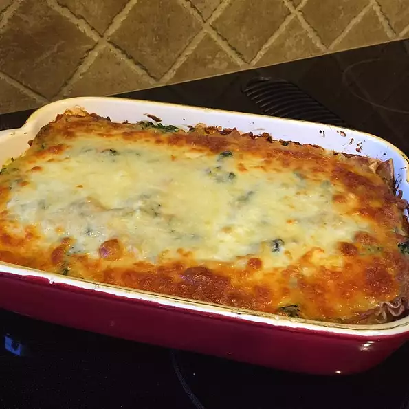

Debbie's Vegetable Lasagna
Discription
A healthy vegetarian lasagna with carrot and zucchini
Ingredients
- 9 lasagna noodles
- 1/4 cup margarine
- 1/4 cup all purpose flour
- 1/2 teaspoon salt
- 1/4 teaspoon black pepper
- 1 cup of milk
- 1/2 cup Vegetable broth
- 2 tablespoonw white wine
- 1/2 grated parmesan
- 1 cup light recotta cheese
- 1 egg
- 1 egg white
- 1 tablespoon olive oil
- 2 cups coarsely shredded carrots
- 2 cups coarsely chopped zucchini
- 10 ounces frozen chopped spinach, thawed and drained
- 1 cup shredded mozzarella cheese
Steps
-
boil a large pot of water(make sure to add salt).
cook noodles for 8 minutes in boiling water while
stirring occasionally until cooked but still firm
to bite. Drain.
- preheat oven to 375F
-
melt margarine in skillet on low heat.
Cook and stir flour, salt, and pepper
until smooth and bubbling. Add milk
and broth into skillet, stir constantly.
Bring sauce to a boil, stire wine into
sauce and remove from heat. add parmesan
and stir until smooth.
-
add ricotta cheese, egg, and egg white
together and whisk.
- Heat olive oil in a skillet on medium-high heat;
saute the carrot, zuchini, and spinach until tender.
add and mix vegetables into ricotta mixture
-
layer 1/3 of the noodles, 1/3 of the ricotta,
and 1/3 parmesan sauce in a 9x13 baking dish,
repeat 2 more times for the remaining ingredients.
top with a layer of mozzarella cheese.
-
bake for about 30 minutes, or until cheese is light
and bubbling.
Back to recipes